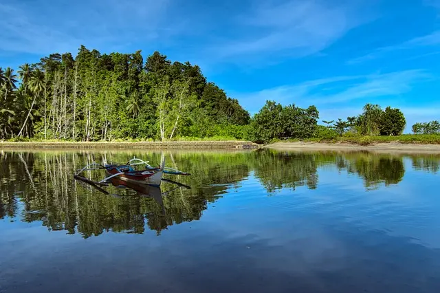
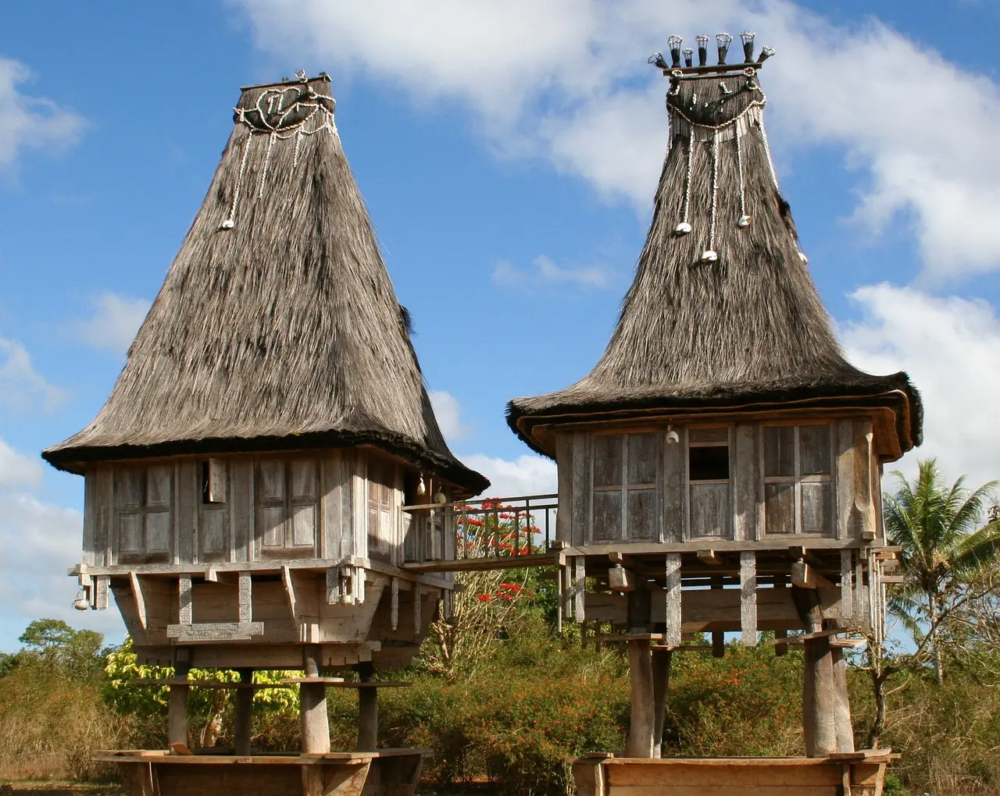

パプア州 自然豊かな秘境

インドネシアのパプア州は、その自然の美しさや文化の豊かさで知られる地域です。以下にパプア州の主な観光スポットや特徴を紹介します。
ワメナはインドネシアのパプア州に位置し、美しい自然環境と独特の文化で訪れる人々を魅了します。ジャングルと山々に囲まれたこの地域では、トレッキングやバードウォッチングが楽しめます。また、地元の市場で見ることができる伝統的な工芸品や食品も魅力です。

モルッカ諸島 隠れた宝石
モルッカ諸島はインドネシアの中でも隠れた宝石です。その美しいビーチと透明度の高い海、カラフルな珊瑚礁はダイビングやスノーケリングの楽園。歴史的な要塞跡やスパイスの香り漂う市場も魅力で、文化的な体験が待っています。
特にアンブン島やバンダ諸島の魅力は際立ち、歴史的にも重要な役割を果たしてきました。現地の人々の温かさと豊かな自然が旅行者を魅了し、トレッキングや地元料理の体験もおすすめです。
交通の便はいまだ整備されていない部分もありますが、それもこの地域の魅力の一部です。訪れるならば、自然の美しさと歴史的背景を楽しみながら、現地の文化と人々と触れ合う貴重な体験ができるでしょう。

東ティモール 歴史的な遺産

東ティモールは美しいビーチ、豊かな文化、歴史的な遺産で訪れる価値があります。首都ディリではポルトガル風の建物や市場が魅力。ダイビングやサーフィンが盛んなジャカンタラ海岸は絶景。ボボナロ地方の山岳地帯ではトレッキングが楽しめ、現地の人々の温かいおもてなしも魅力です。